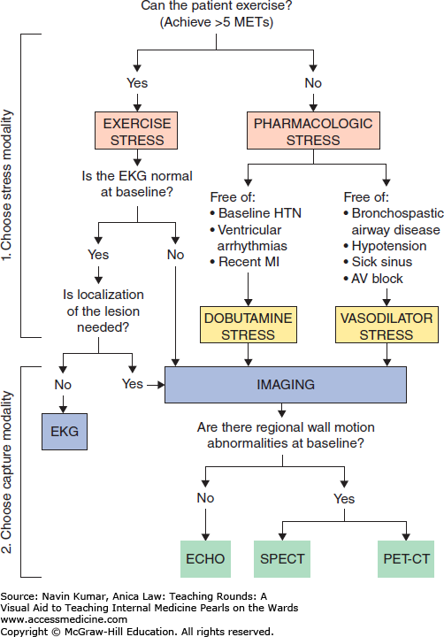

5 Cardiac Stress Tests
- Prevalence of CAD
| Age | Asymptomatic | Asymptomatic | Nonanginal Chest Pain | Nonanginal Chest Pain | Atypical Angina | Atypical Angina | Typical Angina | Typical Angina |
|---|---|---|---|---|---|---|---|---|
| Male | Female | Male | Female | Male | Female | Male | Female | |
| 30–39 | 1.9 | 0.3 | 5.2 | 0.8 | 21.8 | 4.2 | 69.7 | 25.8 |
| 40–49 | 5.5 | 1.0 | 14.1 | 2.8 | 46.1 | 13.3 | 87.3 | 55.2 |
| 50–59 | 9.7 | 3.2 | 21.5 | 8.4 | 58.9 | 32.4 | 92 | 79.4 |
| 60–69 | 12.3 | 7.5 | 28.1 | 18.6 | 67.1 | 54.4 | 94.3 | 90.6 |
LR- of a normal stress test is 0.15
- e.g. pre-test probability of 50-59 yo M with typical angina based on prevalence in this population is 92%. If this patient has a normal stress test, his post-test probability is 63%.
\[ \frac{0.92}{1 - 0.92} = 11.5 \\11.5 \times 0.15 = 1.725 \\\frac{1.725}{1 + 1.725} = 0.633 \]
First question to ask yourself: “Can this patient exercise?”
- can they achieve > 5 METs

Indications for pharmacologic stress testing:
unable to exercise, i.e. unable to achieve > 5 METs
unable to increase HR, inc ppm
- includes those unable to achieve 85% of max HR
Presence of baseline EKG abnormality, e.g. LBBB (‘VolksWagen Drivers Don’t Litter’)
3 types of stressors:
exercise
- pt should be able to get HR to 85% predicted (\(\text{Predicted HR} = 220 - \text{age}\))
inotropes (e.g. Dobutamine)
- Especially useful for pts w/ hx of bronchospasm (e.g. asthma) or severe carotid a. stenosis
- Con: may precipitate arrhythmias, ∴ for pts w/ paced rhythm, hx of VT, etc., you’re pharmacologic choice will be vasodilator
vasodilators (e.g. regadenoson, adenosine, dipyridamole - RAD)
Mechanism: causes coronary vasodilation via the adenosine receptor → cAMP production → vascular smooth muscle relaxation
When to avoid:
- 2nd or 3rd degree heart block without a pacemaker
- severe COPD/asthma
What is the physiologic effect of vasodilators that is used for cardiac stress testing?
dilate and ↑ blood flow in normal cardiac vessels; no effect in diseased areas → dilated normal vessels “steal” flow from stenotic vessels → perfusion defects in scans
Note: vasodilators do not act by ↑ HR (like do exercise or dobutamine)
5 choices for diagnostic tools:
EKG
Echocardiogram
- exercise or pharmacologic (dobutamine is the only option)
Nuclear imaging
MRI 💰
PET 💰